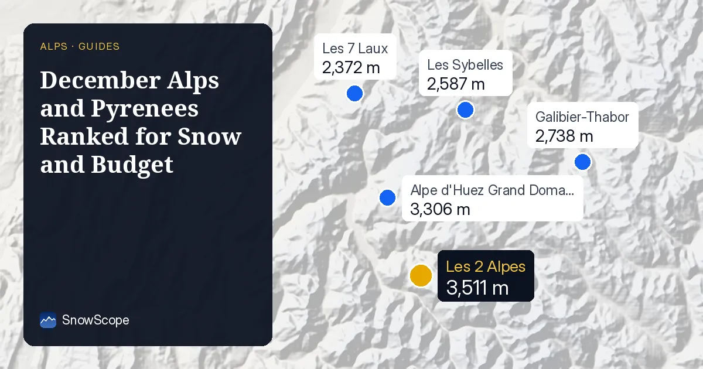

تصنيف جبال الألب والبيرينيه لشهر ديسمبر من حيث التلج والميزانية
المحطات اللي كاينين فـ الحدود ديال فرانسا وإيطاليا كيتصدرو التصنيف ديالنا لشهر ديسمبر 2026 للرحلات الرخيصة. Les 2 Alpes هي اللولة بـ 75 سم فـ وسط الجبل فـ ديسمبر العادي و باص ديال 6 أيام بـ 266,50 EUR، بينما Livigno كتاخد 258,50 EUR قبل 18 ديسمبر. المناطق ديال البيرينيه جاو اللخرين بـ تلج قليل وباصات ماشي رخيصة بزاف.
شوف توقعات التلج مباشرة ديال Les 2 Alpes فالتطبيق ديال SnowScopeالعلو ديال التلج، التنبيهات والخريطة 3D، فابور.
كيفاش قارنا هاد عشرة ديال المناطق ديال التلج
صنفنا عشرة ديال المحطات فـ فرانسا، سويسرا، إيطاليا، أندورا وسبانيا باستعمال التاريخ ديال التلج ديالنا ديال 46 شتوة اللي فاتو. كل محطة تراجعات فـ لتحت ديال لي بيست، فـ وسط الجبل وفـ القمة، مع البيستات والريمونت ميكانيك اللي كاينين. الأثمنة ديال الباصات جاو من المواقع الرسمية لـ 2026-27، من غير La Thuile، فين ما تراجع حتى ثمن فـ الموقع الرسمي. الأرقام ديال التلج قسمات العشرة لـ تلاتة ديال المجموعات واضحة.

القادة فـ التلج ومناطق الحدود
Les 2 Alpes هي اللولة فـ الجدول ديالنا بـ بيستات كيوصلو لـ 108 كم و 46 ريمونت ميكانيك كيوصلو لـ 3511 م. القاعدة ديالها فـ 1284 م رقيقة، بـ معدل 16 سم (0 سم رقيق، 39 سم غليظ) وكتوصل لـ 30 سم أو كتر فـ 2 % ديال الشتوات اللي فاتو ما بين 1 و 7 ديسمبر و 37 % ما بين 22 و 28 ديسمبر. سكن فـ وسط الجبل (2397 م)، اللي فيه معدل 75 سم (30 سم رقيق، 140 سم غليظ) وكيطلع لـ 50 سم أو كتر فـ 46 % ديال الشتوات اللي فاتو ما بين 1 و 7 ديسمبر، 72 % ما بين 8 و 14 ديسمبر، 87 % ما بين 15 و 21 ديسمبر و 91 % ما بين 22 و 28 ديسمبر، بينما القمة ديال 3511 م فيها معدل 176 سم (72 سم رقيق، 302 سم غليظ). الباصات كيديرو 68,00 EUR لـ تيكيت ديال نهار واحد، 266,50 EUR لـ 6 أيام، أو 42 EUR للنهار فـ 28-29 نوفمبر 2026؛ التلج فـ وسط الجبل طلع من 63 سم فـ الـ 15 شتوة اللولة لـ 77 سم فـ الـ 15 شتوة اللخرة.
Saas-Fee (48 كم ديال البيستات، 30 ريمونت) كتوصل لـ 3556 م بـ 68 سم عادي فـ وسط الجبل (2668 م؛ 31 سم رقيق، 113 سم غليظ؛ هبطات من 70 سم لـ 63 سم)، واخا الباصات كيديرو CHF 86 للنهار و CHF 419 لـ 6 أيام. فالتلج كاينين جوج محطات على الحدود كيبانو: Montgenèvre (62 كم، 24 ريمونت) و La Thuile (79 كم، 17 ريمونت). Montgenèvre فيها معدل 56 سم فـ القاعدة ديالها ديال 1795 م (22 سم رقيق، 102 سم غليظ) وكتوصل لـ 30 سم أو كتر فـ 89 % ديال الشتوات اللي فاتو ما بين 15 و 21 ديسمبر؛ وسط الجبل طلع من 49 سم فـ الـ 15 شتوة اللولة لـ 76 سم فـ الـ 15 شتوة اللخرة، والباص ديال نهار واحد كيدير 45,50 EUR حتى لـ 18 ديسمبر 2026 (56,00 EUR من 19 ديسمبر، أو 301,00 EUR لـ 6 أيام فـ الموسم العالي). La Thuile فيها معدل 44 سم فـ القاعدة ديالها ديال 1468 م (17 سم رقيق، 92 سم غليظ) و 67 سم فـ وسط الجبل، طالعة من 64 سم لـ 73 سم.
قيمة زوينة لـ نص ديسمبر
Valloire-Valmeinier و Vars-Risoul بجوج عندهم 131 كم ديال البيستات بـ أثمنة فرنسية متوسطة. Valloire-Valmeinier (34 ريمونت، قمة 2738 م) كدير 54,90 EUR للنهار، 278,50 EUR لـ 6 أيام، أو 20 EUR فـ 5-6 ديسمبر 2026 مع دخول لـ ساحة التزلج. القاعدة ديالها ديال 1406 م فيها معدل 29 سم (12 سم رقيق، 58 سم غليظ)، بينما وسط الجبل (2072 م) فيه معدل 66 سم (31 سم رقيق، 120 سم غليظ؛ طالع من 55 سم فـ الـ 15 شتوة اللولة لـ 69 سم فـ الـ 15 شتوة اللخرة) وكيطلع لـ 50 سم أو كتر فـ 43 % ديال الشتوات اللي فاتو ما بين 1 و 7 ديسمبر، 67 % ما بين 8 و 14 ديسمبر، 80 % ما بين 15 و 21 ديسمبر و 87 % ما بين 22 و 28 ديسمبر. Vars-Risoul (38 ريمونت، قمة 2722 م) كتاخد 58 EUR للنهار و 298 EUR لـ 6 أيام، مع 51 سم عادي فـ وسط الجبل (20 سم رقيق، 97 سم غليظ؛ طالع من 42 سم لـ 62 سم).
فـ إيطاليا، Livigno (83 كم، 37 ريمونت) عندها أرخص باص ديال 6 أيام بـ 258,50 EUR من 28 نوفمبر لـ 18 ديسمبر 2026 (51,50 EUR للنهار من بعد، 66,00 EUR من 19 لـ 25 ديسمبر، 74,50 EUR من 26 ديسمبر). القاعدة ديالها ديال 1811 م فيها معدل 28 سم (6 سم رقيق، 60 سم غليظ) ووسط الجبل (2301 م) فيه معدل 48 سم (طالع من 39 سم فـ الـ 15 شتوة اللولة لـ 52 سم فـ الـ 15 شتوة اللخرة)، يعني بقا فـ القمة ديال 2791 م (85 سم عادي). Pila (56 كم، 16 ريمونت) كتاخد 60,00 EUR للنهار و 322,00 EUR لـ 6 أيام، بـ معدل 45 سم فـ وسط الجبل (طالع من 42 سم لـ 49 سم) و 80 سم فـ 2723 م.
البيريني: تلج قليل، بلا فرق كبير فالثمن
Grandvalira (137 كم ديال البيستات، 53 ريمونت) و Baqueira Beret (154 كم، 36 ريمونت) عندهم مناطق كبيرة، ولكن التلج فـ ديسمبر قليل والباصات ماشي أرخص من أغلب المحطات ديال الألب فاللائحة. القاعدة ديال Grandvalira ديال 1674 م فيها معدل 9 سم (0 سم رقيق، 28 سم غليظ) وكتوصل لـ 30 سم أو كتر فـ غير 7 % ديال الشتوات اللي فاتو من 8-14 ديسمبر للفوق. وسط الجبل (2146 م) فيه معدل 27 سم (2 سم رقيق، 63 سم غليظ؛ طالع من 21 سم لـ 25 سم)، بينما القمة ديال 2619 م فيها معدل 45 سم. الباص ديال نهار واحد لـ الاثنين 14 ديسمبر 2026 كيدير 62,50 EUR فـ الموقع أو 72,00 EUR فـ الشباك.
Baqueira Beret فيها معدل 8 سم فـ القاعدة ديالها ديال 1504 م (0 سم رقيق، 37 سم غليظ)، 20 سم فـ وسط الجبل (2 سم رقيق، 56 سم غليظ؛ طالع من 17 سم لـ 20 سم) و 30 سم فـ القمة ديال 2600 م، كتوصل لـ 30 سم أو كتر فـ 39 % ديال الشتوات اللي فاتو ما بين 1 و 7 ديسمبر و 59 % ما بين 22 و 28 ديسمبر. الباصات كيديرو 74,00 € للنهار (70,00 € بـ الكارط اللي كيتشارجا) أو 359,00 € لـ 6 أيام.
كيفاش تختار السيمانة والارتفاع
إلا بغيتي تبدا ديسمبر بـ ميزانية محدودة، حجز Livigno قبل 18 ديسمبر بـ 258,50 EUR لـ 6 أيام وتزلج فـ الريمونتات الفوقانية، أو اختار Montgenèvre بـ 45,50 EUR للنهار بـ تغطية قوية فـ القاعدة ديال 1795 م. لـ 15-21 ديسمبر أو 22-28 ديسمبر، Les 2 Alpes (266,50 EUR لـ 6 أيام) و Valloire-Valmeinier (278,50 EUR) كيعطيو تلج غليظ فـ وسط الجبل بـ تمن قل من Saas-Fee.
نصايح للي كيتزلجو
- اختار 15-21 ديسمبر أو 22-28 ديسمبر لـ التزلج فـ وسط الجبل: Valloire-Valmeinier كتنط من 43 % ديال الشتوات اللي فاتو بـ 50 سم أو كتر فـ 1-7 ديسمبر لـ 80 % و 87 % من بعد فـ الشهر.
- تزلج فـ وسط الجبل (2397 م) أو كتر فـ Les 2 Alpes فـ ديسمبر، حيت القاعدة ديالها ديال 1284 م فيها غير 16 سم فـ المعدل.
- شري الباصات البرومو فـ الموقع الرسمي قبل 18 ديسمبر 2026 فـ Montgenèvre (45,50 EUR للنهار) أو Livigno (258,50 EUR لـ 6 أيام)، وشري باصات Grandvalira فـ الموقع (62,50 EUR) عوض الشباك (72,00 EUR).
- راجع النشرة ديال الانهيارات المحلية قبل ما تمشي لـ برا البيست فـ الجناب العاليين اللي عامرين بـ التلج ديال الريح.
خرائط أخرى (مواقع خارجية)
المراجع والمصادر
- Les 2 Alpes, official ski pass shop, prices 2026-27 www.skipass-2alpes.com/en/pricing
- Les 2 Alpes, official ski pass shop, opening weekend offer www.skipass-2alpes.com/fr/forfaits/ski
- Saas-Fee/Saastal, official ski pass prices 2026-27 www.saas-fee.ch/en/winter-in-the-saas-valley/ski-pass-prices/saas-fee
- Valloire, official ski pass shop (Galibier-Thabor), winter 2026-27 skipass.valloire.com/fr/
- Montgenèvre, official ski pass prices 2026-27 skipass.montgenevre.com/fr/tarifs-guichet
- Livigno, official ski pass price list 2026-27 (PDF) www.livigno.eu/hubfs/tariffe_26-27.pdf
- Pila, official daily ski pass prices 2026-27 pila.it/en/skipass-pila/daily-skipass/
- Risoul, official ski pass page, Forêt Blanche 2026-27 risoul.labellemontagne.com/fr/hiver/forfaits/risoul-foret-blanche/
- Risoul, official 6-day Forêt Blanche pass page 2026-27 risoul.labellemontagne.com/fr/hiver/forfaits/6-jours-foret-blanche/
- Grandvalira, official ski pass booking (online price for 14 December 2026, read 2026-11-13) www.grandvalira.com/en/ski-pass/day
- Baqueira Beret, official prices (tarifas), season 26-27 www.baqueira.es/es/tarifas
- SnowScope, December snow at three heights and today's snow map snowscope.app/
على هاد الأرقام
الأرقام ديال التلج: التاريخ ديال التلج ديال SnowScope، 46 شتوة اللي فاتت (1980-81 حتى ل 2025-26) فتلاتة ديال العلوات فكل محطة (موديل ديال اللي فات مصحح بالعلو: تقدير لمنطقة، ماشي قياسات ديال المحطة)؛ أرقام دجنبر محسوبة من العلو اليومي ديال التلج فهاد الشتوات. التلج دابا والتوقعات ديال جوج سيمانات: توقعات SnowScope (من ECMWF و GFS، مجال ماشي وعد). التيليسييجات والبيستات: الخريطة ديال OpenSkiMap. الأثمنة: الصفحات الرسمية اللي لتحت، متشافة نهار 2026-11-13؛ الأثمنة تقدر تتبدل، شوف قبل ما تحجز.
كيفاش تستاشهد بهاد المقال
للبحث، التعليم ولا الصحافة: الأرقام والرسومات تقدر تعاود تخدم بيهم بحرية تحت CC BY 4.0 مع هاد الاستشهاد.
SnowScope (2026), تصنيف جبال الألب والبيرينيه لشهر ديسمبر من حيث التلج والميزانية, https://snowscope.app/blog/ar/2026/11/western-europe-december-ski-budget-10-resorts-compared-2026.html, تشاف ف 2026-11-14
SnowScope (Atlas Labs). (2026, November 14). تصنيف جبال الألب والبيرينيه لشهر ديسمبر من حيث التلج والميزانية. SnowScope snow reports. https://snowscope.app/blog/ar/2026/11/western-europe-december-ski-budget-10-resorts-compared-2026.html
BibTeX
@misc{snowscope2026westerneuropedecemberski,
author = {{SnowScope (Atlas Labs)}},
title = {تصنيف جبال الألب والبيرينيه لشهر ديسمبر من حيث التلج والميزانية},
year = {2026},
month = nov,
howpublished = {\url{https://snowscope.app/blog/ar/2026/11/western-europe-december-ski-budget-10-resorts-compared-2026.html}},
note = {Published 2026-11-14 20:11 UTC; accessed 2026-11-14}
}· CC BY 4.0 · الطريقة، الداتا والأدوات →
Les 2 Alpes: التلج والحرارة حسب العلو، هاد الشتا مقارنة مع اللي فاتت (الأدوات) →
تابع Les 2 Alpes
فابور: ميساج ملي يجي التلج، والتوقعات كل صباح.
تقارير أخرى ديال التلج

Pila فوق Aosta كتقترح تمن موحد ديال 60.00 EUR للنهار مع تلج مضمون فدجنبر فالجهة الفوقانية.

Montgenèvre عندها 56 سم ديال التلج فالمعتاد فديسمبر فالباز ديالها، وهادشي كيخلي السواق ديال الويكاند يلقاو تلج كتر من Sestriere اللي فجهة خرى ديال الحدود.

تزلج فـ Livigno بـ 51,50 EUR للنهار قبل 18 دجنبر، فاش كيوصل العلو ديال التلج فالقمة لـ 30 سم فـ 100 % من الشتوات اللي فاتو.